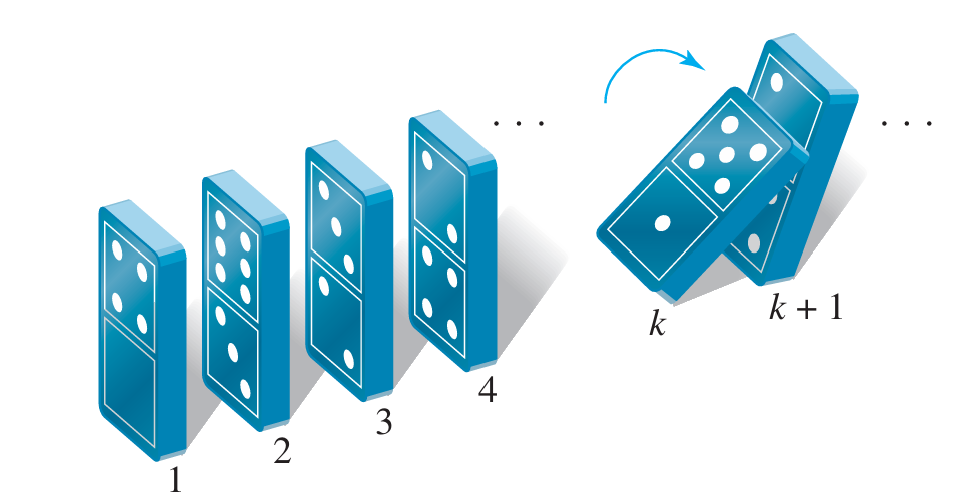

数学归纳法
演绎(deduction)是指使用逻辑推理法则从一般原理推断出结论,归纳则是指在观察到某一规律在大量具体实例中均成立后，总结出一个一般性原则.
数学归纳法是一种演绎而不是归纳,它实际上是一种基于自然数良序性质的演绎推理，不依赖于经验观察，而是通过“基本步+归纳步”的逻辑链条证明所有自然数都满足命题
假设\(P(n)\)是一个关于整数\(n\)的命题,而\(a\)是一个固定的整数,数学归纳法原理(The principle of mathematical induction)指的是,如果满足以下两个条件
- \(P(a)\)为真
- 对于任意整数\(k\ge a\),如果\(P(k)\)为真,那么\(P(k+1)\)也为真
那么对于任意的整数\(n\ge a\),\(P(n)\)为真.
数学归纳法可用于证明形如“对于任意的\(n\ge a\)的整数,\(P(n)\)为真”的命题.在使用数学归纳法时,需要完成以下两个步骤
- 基本步骤(basis step):说明\(P(a)\)为真
- 归纳步骤(inductive step):说明对于任意整数\(k\ge a\),如果\(P(k)\)为真,那么\(P(k+1)\)也为真
在进行归纳步骤时,首先假设\(P(k)\)为真(这个假设被称为推理假设(inductive hypothesis)),然后利用推理假设推导出\(P(k+1)\).一般就是将\(P(k+1)\)往\(P(k)\)的形式上凑.
数学归纳法的直观理解
数学归纳法可以用多米诺骨牌倒下的过程来形象地表示.基本步骤就像是推倒了第\(a\)张骨牌,而归纳步骤就像是说明每一张骨牌倒下都会推倒下一张骨牌.因此,如果基本步骤和归纳步骤都成立,那么所有的骨牌都会被推倒.

下面来看几个利用数学归纳法进行证明的例子
数学归纳法证明的例子
使用数学归纳法证明
\[
1+2+\cdots+n=\frac{n(n+1)}{2}, n\ge1
\]
本题要证明的命题$P(n)$是$1+2+\cdots+n=\dfrac{n(n+1)}{2}, n\ge1$.
对于基本步骤, 需要证明$P(1)$为真,将$P(n)$中的$n$替换为$1$,得到
$$
1=\frac{1\cdot(1+1)}{2}=1
$$
显然,$P(1)$为真.
接着,来看归纳步骤.假设$P(k), k\ge1$为真,即
$$
1+2+\cdots+k=\frac{k(k+1)}{2}
$$
需要证明$P(k+1)$为真,即$1+2+\cdots+(k+1)=\dfrac{(k+1)(k+2)}{2}$为真.
$$
\begin{aligned}
1+2+\cdots+k+(k+1)&=\frac{k(k+1)}{2}+(k+1) \\\\
&=\frac{k(k+1)+2(k+1)}{2} \\\\
&=\frac{(k+1)(k+2)}{2}
\end{aligned}
$$
所以$P(k+1)$为真.$\blacksquare$
=== "证明整除性"
使用数学归纳法证明$2^{2n}-1, n\ge0$可以被$3$整除
本题要证明的命题$P(n)$是$3\mid 2^{2n}-1, n\ge0$.
对于基本步骤, 需要证明$P(0)$为真,将$P(n)$中的$n$替换为$0$,得到
$$
2^0-1=0=0\cdot3
$$
根据整除性的定义,$P(0)$为真.
接着,来看归纳步骤.假设$P(k), k\ge0$为真,即
$$
2^{2k}-1\text{可以被}3\text{整除}
$$
根据整除性的定义,令$2^{2k}-1=3r$,$r$为整数.
我们需要证明$P(k+1)$为真,即$2^{2(k+1)}-1$可以被$3$整除.
$$
\begin{aligned}
2^{2(k+1)}-1&=2^{2k}\cdot2^2-1 \\\\
&=2^{2k}(3+1)-1 \\\\
&=3\cdot2^{2k}+2^{2k}-1 \\\\
&=3\cdot2^{2k}+3r \\\\
&=3(2^{2k}+r)
\end{aligned}
$$
因为$2^{2k}+r$是整数,所以$2^{2(k+1)}-1$可以被$3$整除.
所以$P(k+1)$为真.$\blacksquare$
=== "证明不等式"
使用数学归纳法证明对任意大于等于$3$的整数$n$,
$$
2n+1<2^n
$$
本题要证明的命题$P(n)$是$2n+1<2^n,n\ge3$.
对于基本步骤, 需要证明$P(3)$为真,将$P(n)$中的$n$替换为$3$,得到
$$
2\cdot3+1=7<2^3=8
$$
显然,$P(3)$为真.
接着,来看归纳步骤.假设$P(k), k\ge3$为真,即
$$
2k+1<2^k
$$
我们需要证明$P(k+1)$为真,即$2(k+1)+1<2^{k+1}$.
$$
\begin{aligned}
2(k+1)+1&=(2k+1)+2 \\\\
&<2^k+2 \\\\
&<2^k+2^k \\\\
&<2^{k+1}
\end{aligned}
$$
所以$P(k+1)$为真.$\blacksquare$
=== "Trominoes问题"
Trominoes是由三个正方形组成的图形,包括两种类型,如下图所示
<figure markdown="span">
{ height="100" }
<figcaption>Trominoes的两种类型</figcaption>
</figure>
使用数学归纳法证明对于任意的$n\ge1$,一个$2^n\times2^n$的棋盘,如果去掉其中的一个正方形,那么剩下的部分可以被L型的Trominoes覆盖.
本题要证明的命题$P(n)$是对于任意的$n\ge1$,一个$2^n\times2^n$的棋盘,如果去掉其中的一个正方形,那么剩下的部分可以被L型的Trominoes覆盖.
对于基本步骤, 需要证明$P(1)$为真,将$P(n)$中的$n$替换为$1$,得到一个$2\times2$的棋盘,如果去掉其中的一个正方形,那么剩下的部分可以被L型的Trominoes覆盖.
如左图所示
显然,$P(1)$为真.
接着,来看归纳步骤.假设$P(k), k\ge1$为真,即对于任意的$k\ge1$,一个$2^k\times2^k$的棋盘,如果去掉其中的一个正方形,那么剩下的部分可以被L型的Trominoes覆盖.
我们需要证明$P(k+1)$为真,即对于任意的$k+1\ge1$,一个$2^{k+1}\times2^{k+1}$的棋盘,如果去掉其中的一个正方形,那么剩下的部分可以被L型的Trominoes覆盖.
将一个$2^{k+1}\times2^{k+1}$的棋盘分成四个$2^k\times2^k$的子棋盘,去掉的那个正方形必然在其中的一个子棋盘中,根据归纳假设,这个子棋盘剩下的部分可以被L型的Trominoes覆盖.
将其他三部分的缺口拼成一个L型的Trominoes,覆盖在四个子棋盘的交界处,如右图所示
所以$P(k+1)$为真.$\blacksquare$
<figure markdown="span">
{width="200" align=left}
{width="200" align=right}
</figure>